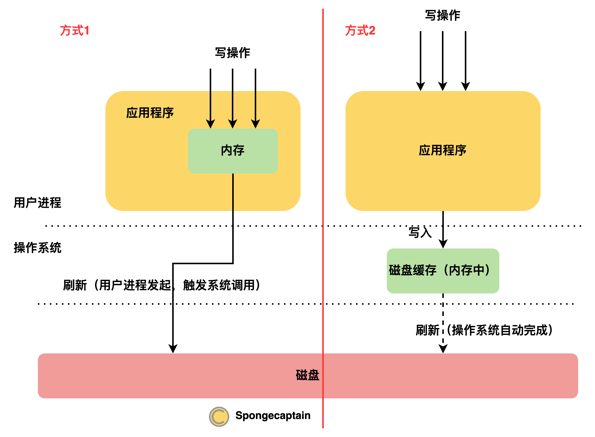
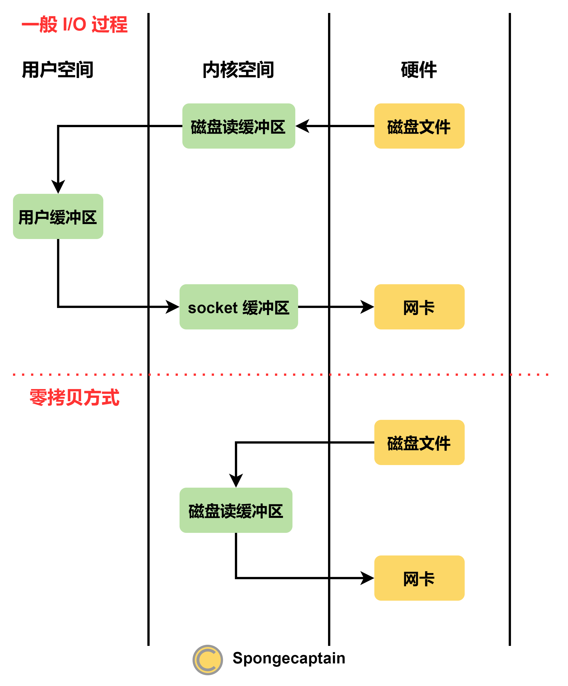

Kafka 的高性能的源头
文章目录
1. Kafka 持久化的秘密
无论是操作系统还是作为应用程序的 Kafka，都试图提供一个高效的写 API。我们这里分为多个部分对 Kafka 高效持久化（写操作会触发持久化）特性进行分析。
1.操作系统的写操作优化
现代操作系统为了提高磁盘的读写性能，提供了如下三个技巧：
- 预读（read-ahead）：提前将一个比较大的磁盘块读入内存。这源自于磁盘读操作的空间局部性原理。因此，即使应用程序仅仅需要读取 256 byte 的磁盘数据，操作系统至少会读取 4KB；
- 后写（write-behind）会将很多小的逻辑写操作合并起来组合成一个大的物理写操作；
- 磁盘缓存：操作系统为应用提供一块内存空间，读写操作首先作用于磁盘缓存。当磁盘缓存的数据量达到一个程度时，便会将数据保存到硬盘中（重点：应用程序不参与此过程）。
2.应用层序：Kafka
为什么消息队列也需要持久化机制？
消息队列需要为消息提供持久化机制的原因有很多，下面列举几个：
- 持久化机制是去耦合的前提：消息队列提供的一大特性就是将消息生产者与消息消费者去耦合。我们假设消息队列不提供持久化机制，那么生产者在投递消息时只有通过消费者的 ack 才能够确保消息投递成功，这意味着生产者与消费者不再去耦合；
- 持久化机制是分布式组件的构建基石：消息队列在分布式系统中扮演着重要的角色，特别是在流式处理系统中。消息队列本身就是一个分布式组件，由多个物理主机构成。如果消息不持久化，那么物理主机重启后就会存在消息丢失问题。
- 仅仅利用内存构建消息队列既不安全也不现实。内存成本比磁盘成本高太多，我们通常期望消息队列具有一定的安全缓冲作用，这是因为队列两端的消息生产速度与消息消费速度往往无法匹配。例如，消费者由于各种原因（例如 JVM 导致的 stop the world）出现临时中断，但由于系统去耦合，生产者对此完全不知情，此时队列就应当提供一个安全缓冲作用。
为什么 Kafka 要定制持久化机制？
操作系统可以运行不同的应用程序，不用应用程序的读写背景以及需求并不相同，因此操作系统并不能完美适配所有应用程序的需求。Kafka 作为一个应用程序，也需要设计其定制化的持久化机制。
大多数应用程序会在内存中设置一个内存池，用以存放写操作对应的数据。在需要时，将内存池中的相关数据刷新到文件系统中。
什么是需要时？
需要指的是一旦满足某一个条件，那么内存池中的相关数据就需要刷新到文件系统中，具体的条件五花八门，例如：
- 当数据条数达到一定阈值时，就需要将相关数据刷新到磁盘中；
- 当内存池中可用内存不足一半时（这个比例可以控制），就需要将相关数据刷新到磁盘中；
- 当内存池距上一次刷新时间间隔达到一定阈值时，就需要将相关数据刷新到磁盘中；
而刷新（flush）操作通常通过异步 I/O 线程实现（异步是强调其与处理写操作的线程并非一个线程），过程如下图所示：

上图中，方式 1 是部分强调事务安全性应用的选择，例如 MySQL 持久化 redo log。而方式 2 对应于 Kafka 的做法。
在 Kafka 看来，其所有的数据都立即写入文件系统的持久化日志文件，但不进行刷新数据的任何调用（例如 fsync 系统调用）。但在事实上，由于操作系统的磁盘缓存机制，上述数据现在是在内存中，而不是磁盘中，操作系统会随后将磁盘缓存刷新到磁盘中。
换句话说，Kafka 服务端给 Producer 回复写成功的 ack 时，Producer 产生的消息并不一定已经持久化到磁盘中。这就是让 Kafka 作为一个基于磁盘的消息队列，能够表现得如同一个内存消息队列的原因之一：Kafka 仅仅将数据写入内存就向 Producer 返回 ack，表示写操作执行成功。原来，Kafka 本质上是一个 disk-backed in-memory queue，不过，其受到操作系统的磁盘缓存大小的限制。
那么，代价是什么呢？
这种写操作的持久化是不彻底的，一个 Producer 明明收到了来自 Kafka 服务端的写成功请求，但消息可能并没有持久化。例如，操作系统还没来得及将磁盘缓存中的消息刷新到磁盘，就发生了宕机。**消息彻底丢失了！**Kafka 的这种做法与传统与关系型数据库截然不同，一个写操作成功的 ack ≠ 持久化成功。
正因为如此，Kafka 的消息持久化机制只能确保消息丢失的概率非常小，而不是彻底的消息持久化。例如，当 replicas 为 3，acks 设置为 all 时，只有 3 个 broker 同时在将消息刷入磁盘前宕机，才会出现消息丢失问题。
3.数据结构
Kafka 使用了一种分段式、只追加（Append-Only）日志作为持久化层的数据结构，能够把生产者的写消息请求在物理层通过磁盘顺序 I/O 的方式得以实现。
在不少 Kafka 高性能的文章中提到：磁盘顺序 I/O 的读写速度很快甚至快于内存随机 I/O，虽然 Kafka 的性能的确得益于顺序 I/O，但这种说法存在误区。现在操作系统提供虚拟内存机制，让软件误以为其独占所有内存空间，虚拟内存的主要好处之一是给操作系统带来了同时运行更多进程的潜力，代价则是物理内存实际上就这么大，进程主观上认为的内存中数据很有可能已经 swap 到磁盘。此时，进程就会发生缺页异常，缺页异常将导致磁盘 I/O。可见，在这种情况下，磁盘的顺序 I/O 比发生缺页异常的内存随机 I/O 性能的确要快。很多文章漏掉了这个前提条件，这是需要注意的。
4.日志批处理
Kafka 作为一个消息队列，其显然是一个 I/O 密集型应用。操作系统面临的 I/O 可不仅仅是磁盘 I/O，还有网络 I/O。正如，Why Kafka Is so Fast 文章中指出，顺序 I/O 在大部分的存储介质上都非常快（无论是磁盘还是内存），几乎可以和网络 I/O 的峰值性能相媲美。在实践中，这意味着一个设计良好的日志结构的持久层将可以紧随网络流量的速度。事实上，Kafka 的瓶颈通常是网络而非磁盘。因此，除了由操作系统提供的底层批处理能力之外，Kafka 的 Clients 和 Brokers 会把多条读写的日志记录合并成一个批次，然后才通过网络发送出去。日志记录的批处理通过使用更大的包以及提高带宽效率来平摊网络往返的开销。
2. Kafka 消息消费的技巧
Kafka 集群如何提供一个高效的消息消费 API？
Kafka 为此设计了如下三种方式来实现高效的消息消费：
1.批量发送
Kafka 可以将多条消息按照分区进行分组，并采用批量的方式一次发送一个消息集合。实际上，这种思想来自于 TCP 中分包传输的思想。不过正因为如此，消息究竟如何通过网络传输取决于 TCP 的 Nagle 算法配置。具体来说有：Nagle 算法通过减少需要传输的数据包，来优化网络。其原理是如果要发送的消息过小，那么先缓存，需要时在将缓存中的消息发送给对方。如果 Kakfa 启动了 TCP_NODELAY 配置，就意味着禁用了 Nagle 算法，允许小包的发送。
2.消息压缩
消息压缩机制的前提就是消息进行批量发送，否则单独为一个消息进行压缩（压缩率最本质取决于多消息间的重复性），不仅仅压缩率不高，还浪费 CPU 资源。消息压缩的目的是减少网络传输带宽，这一点在基于 TCP 设计应用层通信协议时，也必须得到考虑。
3.零拷贝技术
零拷贝技术提出的目的在于避免在不同硬件之间交换数据时，非必要地涉及用户空间（其在内存中），非必要的内存间拷贝数据。零拷贝技术主要依赖于文件描述符的“共享” 实现，但是这里不介绍其原理，仅仅说明其特性。
一般 I/O 过程与零拷贝技术下的 I/O 过程的比较如下图所示：

其中，绿色代表出于内存中，黄色代表位于非内存硬件中，具体的零拷贝技术可以参考我的另一篇文章：DMA 与零拷贝技术。
4.磁盘顺序读/写
为什么 Kafka 基于磁盘的消息存储也能够提供非常高的系统吞吐量？
Kafka 的工作原理与 Apache ActiveMQ 或 RabbitMQ 这样的传统消息传递系统差别很大。最大的一个区别就是，对于传统系统来说，持久化是一个成本高昂的可选项，它通常会带来两个数量级的性能下降。相反，对于 Kafka 来说，即使单个服务器每秒处理的消息量高达 GB 级甚至更多，系统仍然能够自动持久化所有消息。造成这种性能上巨大差异的原因之一是，Kafka 类系统不支持逐个消息确认（message-by-message acknowledgment），而是让服务按照顺序读取消息，偶尔根据上次未读消息的偏移量更新游标。而且，Kafka 侧重于消息处理，而不是数据转换或任务调度。这种范围上的限制有助于 Kafka 实现非常高的性能。
总之，Kafka 凭借其大部分时间的磁盘顺序 I/O 以及小部分时间的更新游标后的顺序 I/O，提供了非常高效的系统吞吐量。代价则是 Kafka 不支持单个消息确认，适合于顺序写、顺序读的场景。
3. Kafka 服务器的优化
1.批处理与消息压缩
批量处理的最大好处是能够节约网络 I/O 带宽，但另一个好处也不容忽视：批量处理是进行压缩的前提。压缩算法的压缩比率收到数据重复性的极大影响，因此对单个消息进行压缩意义并不大，只有对批量消息的压缩才能达到一个理想的压缩率。特别是当使用 JSON 等基于文本的数据格式时，批量消息的压缩效果会非常显著，压缩比通常能达到 5 到 7 倍。
注意：日志记录批处理在很大程度上是在 Client 侧完成的，把负载转移到 Client 上，有三个好处：
- 节约网络带宽：消息在发送前就已经完成了压缩；
- 提高 Brokers 的磁盘 I/O 利用率：Broker 持久化压缩后的消息；
- 降低 Brokers 的 CPU 负载：Client 负责完成批量消息的压缩与解压，Broker 仅仅需要进行持久化；
2.并行流数据处理
并行流数据处理得益于 Kafka 的分布式设计。Kafka 将一个 topic 设计为多个 partiition，如果 partition 个数设计合理，那么 partition 能够均匀分布于整个 broker 集群。这样一来，Kafka 可以将对一个 topic 的消息读/写能够以整个 broker 集群规模并行化。如果与更传统的 MQ 进行比较：在 RabbitMQ 的等效设置中，多个并发的 Consumers 可能以轮询的方式从队列读取数据，然而这样做，一方面失去了消息消费的顺序性，而且没有并行化。
4. JVM 层的优化
JVM 的 GC 算法主要负责回收 JVM 堆区的对象内存，无论哪一个版本的 GC 算法，不可避免导致 stop the world 问题的出现，此时 Kafka 将无法执行逻辑以及对外做出响应。GC 的时间与 GC 所负责的内存大小有很大的关系，如果能够减少这些内存的大小，那么就能够减少 stop the world 的持续时间，避免 Kafka 服务的抖动。
Kafka 使用 Channel、Native Buffer 以及 Page Cache，这些都是堆外内存，因此避免了大范围的 GC。
5. Kafka 框架的若干创新
Kafka 可以在大规模流式处理框架中作为消息队列而存在，其与传统的消息队列存在一些区别，包括一些重要创新，Kafka 凭借如下技术创新，使得其在流处理中应用广泛。
1.要求按照顺序确认（acknowledged）所有消息
不再需要为每个监听者（listener）跟踪每个消息的确认情况，读消息的操作与读取文件的操作类似。
2.设置消息持久化时间（通常的单位为天甚至星期）
不再需要跟踪特定消息的读取情况，设定消息的保留时间，确保消息被读取之后才能删除。
3.要求消费者自己管理即将处理的下一条消息的偏移量（offset）
Kafka 提供 3 种方式存储消费者要消费的下一条偏移量，先说前两种：老版本存储于 ZooKeeper 节点中，新版本存储于 Kafka 的 __consumer_offsets 主题中。但是注意，偏移量存储在远端，但是偏移量究竟取值多少还是由消费者自己决定。
第三种方式是：消费者甚至完全可以在 Kafka 之外管理这些偏移量，例如存储于文件系统、SQL 数据库或者 Redis 中。
4.将服务端功能下放到客户端
Kafka 中最主要的两个客户端为 Producer 以及 Consumer。传统数据库、消息队列以及其他的中间件的 server 都设计为重量级，而 Client 设计为轻量级应用。这意味着，服务端将负责系统的大部分负载，而 Client 仅仅是充当应用程序代码与 Server 之间的接口。
而 Kafka 将部分负载从 Server 下放到 Client，例如 Producer 会负责消息的负载均衡、校验和、日志分段等功能的执行。
REFERENCE
- 《深入理解Kafka：核心设计与实践原理》
- 《流式架构：Kafka 与 MapR Streams 数据流处理》
- Why Kafka Is so Fast
- Can a message loss occur in Kafka even if producer gets acknowledgement for it?